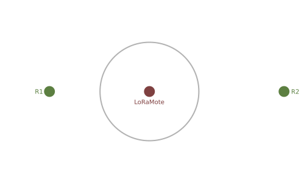
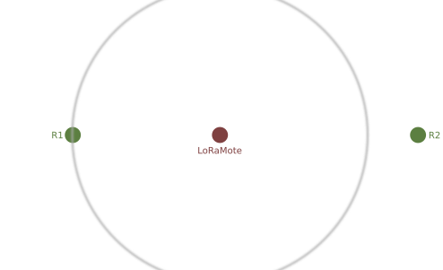

La présentation peut être suivie sur...
Localisation de LoRa par DToA
Présentation thèse de Bachelor
par Sebastien Chassot
Ingénierie des technologies de l'information avec orientation en Informatique matérielle
HESSO - hepia
septembre 2017
Professeur responsable :
Table des matières
Introduction
Qu'est-ce que LoRa ?
Le principe du DToA
Software Define Radio (SDR)
L'architecture du système
Le matériel utilisé
La synchronisation des récepteurs
Les modifications au niveau du FPGA
La modulation LoRa
Les algorithmes de détection
Les résultats
Perspectives et conclusions
Introduction
Choix du sujet
Objectifs du projet
Travail exploratoire

Lien RF pour applications IoT
Innovation technologique - Semtech
Une modulation simple et efficace
LoRa la couche PHY et LoRaWAN la couche de routage
En résumé, lien faible consommation couvrant de grandes distances
Time of Flight (ToF) vs. DToA
Les émetteurs n'ont pas besoin d'avoir d'horloges
Les récepteurs ont besoin d'être synchronisés
Le réseau GPS est utilisé comme source de temps par les récepteurs



Un système d'acquisition de signal RF
Outils de prototypage
Travail sur une plage de fréquences étendue (de 70MHz à 6GHz)
Bande passante de 50 Msamples par seconde
L'architecture du système
Questions ?
liens
https://media.ccc.de/v/33c3-7945-decoding_the_lora_phy (vidéo)
https://github.com/selinux/uhd (code du projet)
https://github.com/selinux/fpga (code de la partie FPGA)
follow presentation on...https://selinux.github.io/localisation_lora_presentation